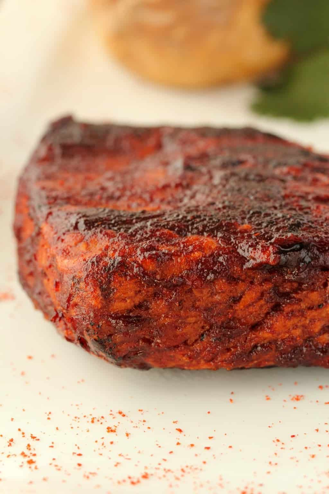

Vegan steak

Description
Vegan steak are an easy alternative to steak. It's is delicious and cruelty-free !
How to make it ?
Ingredients
¾ cup Canned Chickpeas (Drained) (123g)
¼ cup Nutritional Yeast (15g)
1 tsp Garlic Powder
1 tsp Onion Powder
¼ tsp Cumin
¼ tsp Ground Coriander
½ tsp Oregano
2 Tbsp Soy Sauce
½ cup Tomato Paste (130g)
Steps
- Add the chickpeas, nutritional yeast, garlic powder, onion powder, cumin, coriander powder, oregano,
soy sauce, tomato paste, paprika, black pepper, dijon mustard, liquid smoke and vegetable stock to
the food processor and process until well mixed.
- Transfer to a mixing bowl and add the vital wheat gluten. Stir in with a spoon briefly and then get
in there with your hands, mixing it into a dough. Knead the dough for around 2 minutes, you want it
to go from sticky and soft to firm and stretchy,
so that when you pull it, it snaps back into place. See our full post for lots more info on kneading.
Make sure you don’t over-knead it because that will cause your steaks to become very tough.
- As soon as you have a firm, stretchy texture, flatten it out and cut it into 4 roughly equal sized
steaks. Use a potato masher to bash the steaks down a bit to flatten, but don’t do this too much as
it counts as kneading, and you don’t want to overdo it.
- Wrap the steaks individually in tinfoil and then steam them for 20 minutes. Don’t wrap them too tight
as they will expand while steaming. You can steam them in a steamer basket over a pot of boiling
water, or in any steamer that you have.
- While the steaks are steaming, prepare your marinade sauce by adding all the ingredients to a bowl
and whisking them together. Let it sit for a little while and then whisk again. You want it to be nice
and smooth and it can take a couple of minutes for the brown
sugar to dissolve properly.
- After steaming for 20 minutes, unwrap the steaks from their tinfoil and place into a square dish. Pour
over the marinade sauce and use a brush to make sure the steaks are properly covered. Turn them over
in the sauce a few times.
- Heat a pan with a little olive oil (or other oil, 1 Tbsp is fine) and then fry the steaks (I found
they all fitted into the same pan) flipping them regularly and brushing more marinade sauce on them
every time you flip them, until they are nicely browned and caramelized.